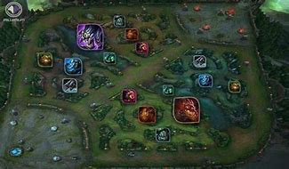

l'aspect le plus important du jeu en midlane sont les mouvements sur la map qu'ils soient alliés ou adverses.Décaler peut s'avérer plus ou moins délicat en fonction du champion que vous jouez mais aussi de la situation dans laquelle est la partie en cours, cependant, la mid lane est idéale pour ce genre d'exercice. Il n'y a pas néanmoins de science exacte ! Si votre champion possède une mobilité réduite, essayez de vous déplacer là où vous avez la vision afin d'éviter les mauvaises rencontres. Dans le cas d'un champion plus mobile, il peut être intéressant d'emprunter un chemin plus dangereux afin de surprendre vos futures victimes. le nombre de possiblité est extremement large dans ce jeu mais c'est a vous d'évaluer l'état de votre partie afin de prendre les bonnes décisions
Regarder cette vdéo pour vous aider sur l'aspect de déplacement de maple nombre de possiblité est extremement large dans ce jeu mais c'est a vous d'évaluer l'état de votre partie afin de prendre les bonnes décisions. C'est à vous d'évaluer vos compétences et celles du héros que vous jouez en fonction du champion adverse que vous affrontez.Il va de soi qu'il est préférable de farmer vos sbires hors de votre tourelle (afin de ne rater aucun last hit) mais il arrivera un moment où vous vous trouverez face à un champion qui a une meilleure capacité que vous à les tuer rapidement (wave clear). Dans ce cas-ci essayez de le punir si possible à chaque fois qu'il tuera un de vos sbires, par contre ne négligez pas vous aussi de tuer les siens.Il faut savoir équilibrer : tenter de farmer tout en l'empêchant d'en faire de même pour prendre l'ascendant sur votre ennemi.
